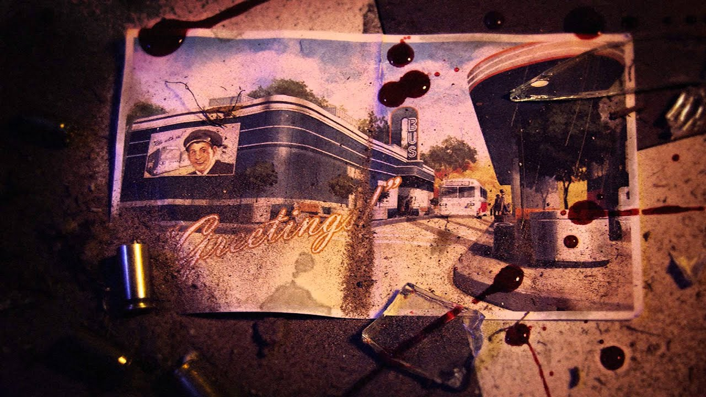
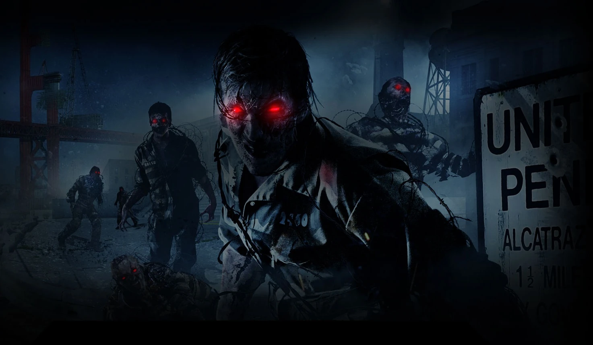
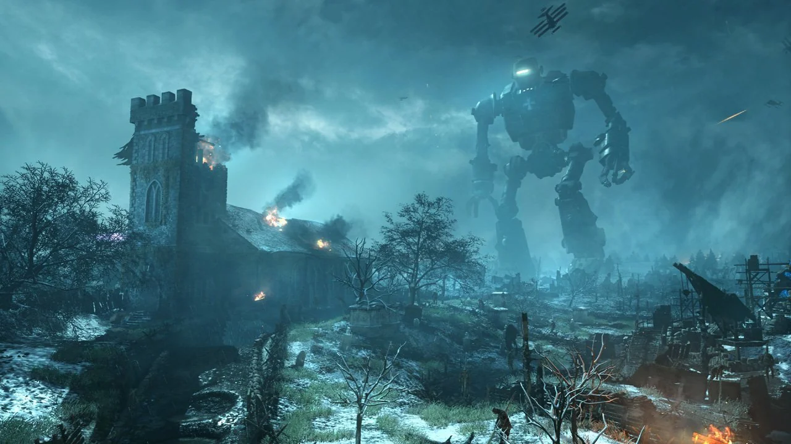
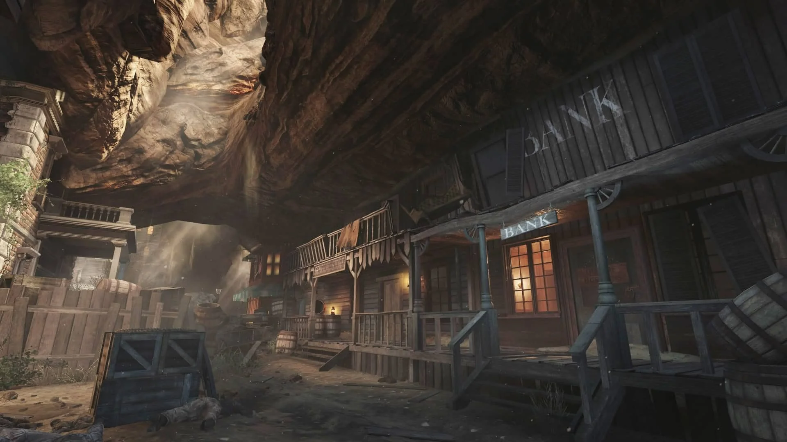

TranZit
"¿Que pasaría si la tierra fuera destruida? Pues tranzit existe por ello, acompaña a los nuevos 4 jugables en este mapa de zombis"...
Tutorial Easter EggMob of the Dead
"Enfréntate a los no-muertos a medida que intenta liberarse de la prisión física y metafórica de la prisión de Alcatraz..."
Tutoria Easter EggOrigins
"Cuidado con la lava de origins... Nada que decir de este mapa, simplemente perfección"...
Tutorial Easter Egg